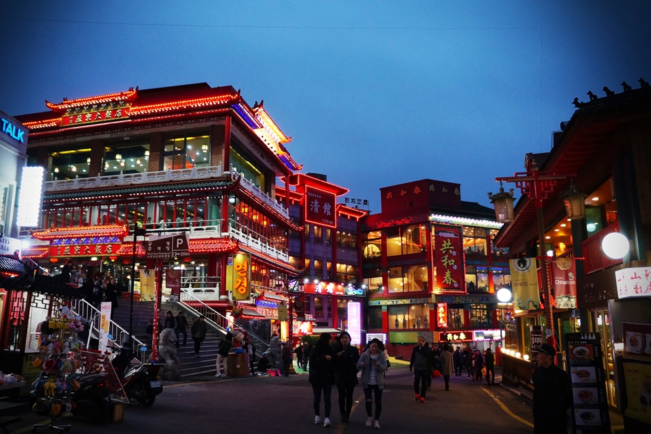

패루는 마을 입구에 세우는 탑 모양의 중국 전통대문이다.
차이나타운에는 총 3개의 패루가 설치되어 있다.
첫 번째는 지금 보고 있는 인천역 건너편에 있는 "중화가"이고,
두 번째는 한중문화원 입구에 있는 "인화문",
세 번째는 자유공원 입구에 세워져 있는 "선린문"이다.
이 패루들은 인천 차이나타운의 세 꼭지 점에 위치해 있다.
패루를 모두 보게 된다면 차이나타운을 전부 둘러본 것이 되겠다.
짜장면박물관을 나와 조금 걸으면 중국풍 양식으로 지어진 한중문화관이 나온다.
한국과 중국의 역사,문화 등을 비교해 볼 수 있고 중국차 시음,
중국의상 입어보기 등의 체험도 할 수 있는 곳이다. 한중문화관 앞에는
두 번째 패루 인화문이 서있다.
드디어 백짜장이 나왔습니다~~~
오빠 왈. 오므라이스에 들어간 재료는 다 들어왔다고ㅎㅎㅎㅎ
그도 그럴게-
양파, 호박, 당근, 완두콩, 옥수수, 버섯 다 있었어요.
그리고 중국음식의 트레이드 마크 새우 까지!
양파의 단 향과 새우의 맛이 난다.
가끔 옥수수 씹으면 통조림 옥수수 맛이... 좀 나긴 하지만 괜찮아요 그정도는 뭐!
그리고 우리엄마가 음식의 데코 완성시킬려고 놓는 새싹채소까지-
저는 3.5점 주겠습니다!
한번쯤 먹어볼만한 맛이긴 했어요~
카페 C27
주소: 인천 중구 차이나타운로44번길 19
저의 ‘소확행’은 ‘멀지 않지만 가깝게 느껴지지 않는 곳에서의 커피한잔’입니다~!
현실에서 한발자국 걸어 나온 기분으로 편안한 마음에 향기로운 커피한잔은 덤이지요~

종일 들뜬 차이나타운의 곳곳을 걸었는지라 침착한 밤의 기운을 반갑게 맞이한다. 사람들이 썰물처럼 빠져나간 시각,
도시는 하루의 피곤을 풀며 조용하게 침잠해 들어가고 있다. 창가에 앉아
목소리를 낮추어 오늘 보고 들은 인천에 대하여 이야기를 풀어 놓고,
소소한 일상의 일들에 대해서도 말을 나눈다. 공기가 꽤나 소슬한 지금,
따뜻한 실내에서 한 잔의 맥주를 나누니 몸과 마음이 노곤하게 풀어진다. 포근한 침구 속으로 들어간다. 하루의 밤이 다정하게 여미어진다.